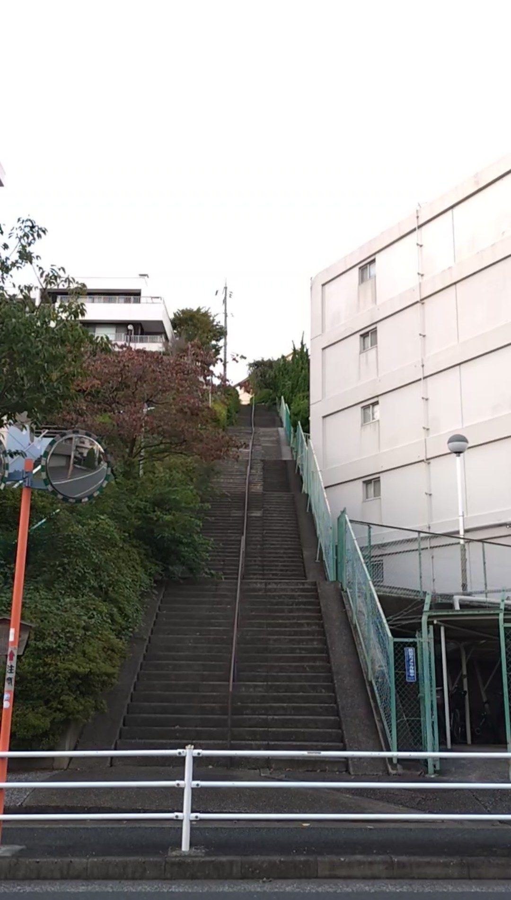
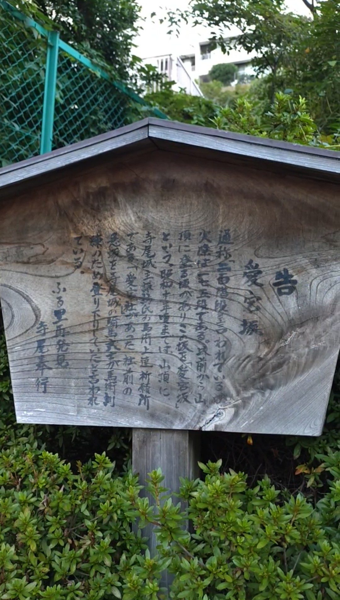
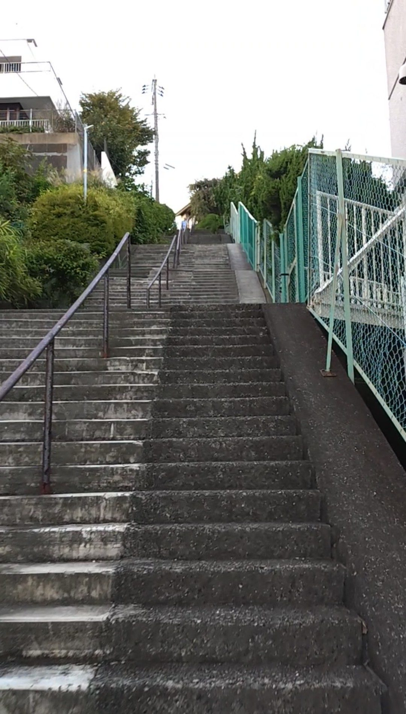
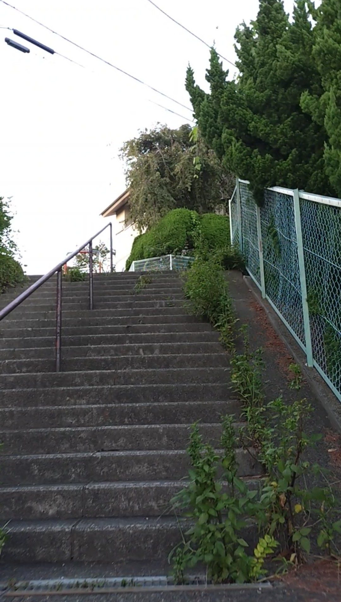
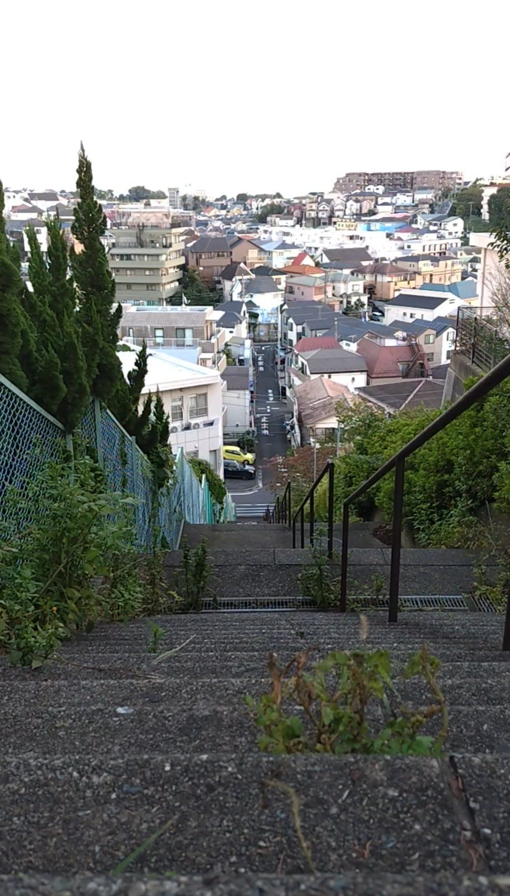

📅 2026年10月1日訪問
☀️ 晴れ、昼
⏱️ 登り2分
💰 無料
住宅街に鎮座する、169段の大階段といった感じです。階段のそばに白い建物があり、それと対比することで、いかに高いかがわかります。パッと見ただけで5階以上はあります。階段の色が統一されていて、階段のヘリの区別がつかず、真っすぐ長い道のようにも見えます。

階段・石段スポット基本情報
アクセス
JR鶴見線「鶴見駅」下車、徒歩約30分。住宅街の中に、寺尾高札愛宕坂の大階段があります。
注意点・持ち物
段差は普通くらいで、中央に手すりがあります。登りにくさはありませんが、169段と段数が多いため、歩きやすい靴でお越しください。
行ってみた
階段の入り口につきました。入口にある立て看板です。現代の看板というより、木でできて筆で書かれているようで、昔ぽさが出ています。古くからこの坂は利用されていたようです。

階段を登り始めてみます。階段の高さは普通くらい。手すりが中央にあります。登りにくさはなさそうですが、段数が多いので大変そうといった感じです。日が少し出てきて、階段の見た目の色が変わりました。

引き続き登っていきます。階段の脇にはフェンスが立てかけられており、木や葉っぱが入るのを防いでいるのかなと思います。ずっと似たような風景が続くので大変でしたが、もうひと踏ん張りです。

階段の頂上から階段のほうを振り返ります。遠くを見ると、頂上と同じくらいの目線に住宅があります。このあたりの傾斜がちな地形を感じることができます。
